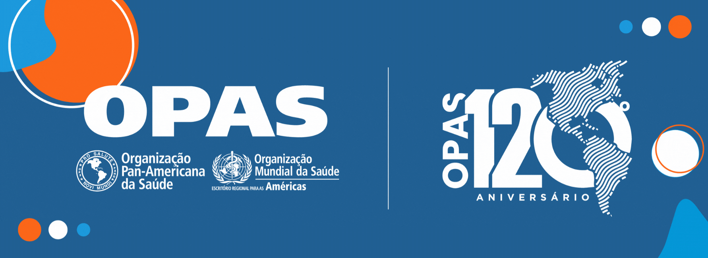

Transtornos mentais
Principais fatos
Existem diversos transtornos mentais, com apresentações diferentes. Eles geralmente são caracterizados por uma combinação de pensamentos, percepções, emoções e comportamento anormais, que também podem afetar as relações com outras pessoas.
Entre os transtornos mentais, estão a depressão, o transtorno afetivo bipolar, a esquizofrenia e outras psicoses, demência, deficiência intelectual e transtornos de desenvolvimento, incluindo o autismo.
Existem estratégias eficazes para a prevenção de transtornos mentais como a depressão.Há tratamentos eficazes para os transtornos mentais e maneiras de aliviar o sofrimento causado por eles.
O acesso aos cuidados de saúde e aos serviços sociais capazes de proporcionar tratamento e apoio social é fundamental.
A carga dos transtornos mentais continua crescendo, com impactos significativos sobre a saúde e as principais consequências sociais, de direitos humanos e econômicas em todos os países do mundo.
Folha informativa.
Quem está em risco de desenvolver transtornos mentais?
Os determinantes da saúde mental e transtornos mentais incluem não apenas atributos individuais, como a capacidade de administrar os pensamentos, as emoções, os comportamentos e as interações com os outros, mas também os fatores sociais, culturais, econômicos, políticos e ambientais, como as políticas nacionais, a proteção social, padrões de vida, as condições de trabalho e o apoio comunitário.
Estresse, genética, nutrição, infecções perinatais e exposição a perigos ambientais também são fatores que contribuem para os transtornos mentais.
Saúde e apoio
Os sistemas de saúde ainda não responderam adequadamente à carga dos transtornos mentais. Como consequência, a distância entre a necessidade de tratamento e sua oferta é ampla em todo o mundo. Em países de baixa e média renda, entre 76% e 85% das pessoas com transtornos mentais não recebem tratamento. Em países de alta renda, entre 35% e 50% das pessoas com transtornos mentais estão na mesma situação.
Um outro problema é a má qualidade dos cuidados prestados a muitos que recebem tratamento.
Além do apoio dos serviços de saúde, pessoas com transtornos mentais precisam de apoio e cuidados sociais. Frequentemente necessitam também de ajuda para acessar programas educativos que se adaptem às suas necessidades e encontrar emprego e moradia que lhes permitam viver e ser ativos nas suas comunidades locais.